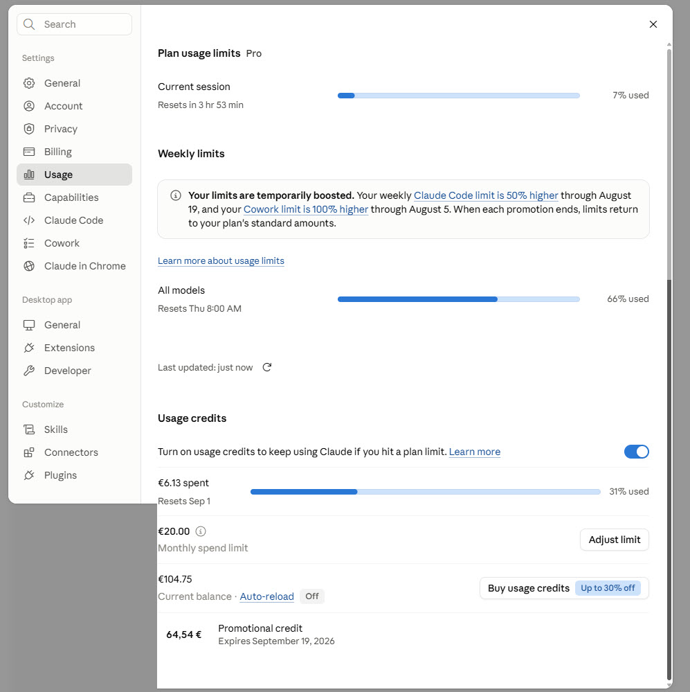

Läs av Inställningar → Usage i claude.ai (en enda skärmdump räcker – session, vecka och usage credits visas där tillsammans) och mata in siffrorna nedan. Allt beräknas direkt i webbläsaren, inget sparas här — kopiera raden längst ner till data.md om du vill spara historik. Fälten är förifyllda med den senast kända avläsningen (kl 24, 4 augusti 2026) — ersätt med nya siffror nästa gång du kollar.
✓ Verifierat 2026-08-04: den publika varianten ger samma resultat som det här verktyget. Se testrapporten.
Kärnfrågan
Fyll i siffrorna nedan för att se läget
Snabbanalys: ladda upp en skärmdump av Inställningar → Usage för att förifylla fälten nedan med OCR.

Exempel på vad du kan ladda upp. Hovra för att se vilka värden som är viktiga, klicka för att förstora.
Current session i Usage-vyn. Återställs var 5:e timme — det finns ingen riktig "per dygn"-mätare hos Anthropic.
Weekly limits i Usage-vyn. Kan vara tillfälligt boostad — Anthropic visar då andelen av den boostade gränsen, inte mot ditt normala abonnemang. Byter du produkt fylls kända boost-värden i automatiskt (redigerbart). Osäkert, men trolig tolkning: "All models" ligger i samma ruta som Claude Code-boosten och Cowork syns inte alls här — sannolikt betyder "All models" "alla Claude-modeller inom din Claude Code-vecko-pott", inte Claude Code + Cowork ihopslaget. Välj då "Claude Code" i listan, inte "Annat", om du inte vet säkert. "Annat" rör inte boost-fälten — den lämnar dem som de var, den antar aldrig 0%.
Använd "€X spent, resets [datum]" från Usage-sidan — inte fakturorna på Billing-sidan. Fakturor visar när du fyllt på saldot, inte vad du förbrukat. Antagande, ej bekräftat av Anthropic: cykeln antas följa kalendermånader (från den 1:a till nästa 1:a) eftersom "Resets Sep 1" pekar på det — stämmer det inte för dig, blir takt-jämförelsen nedan missvisande.
Rena referensfält nedan — påverkar ingen beräkning ovan, bara till för att hålla koll på ditt förbetalda saldo. Hovra (eller tryck på mobil) på i-ikonerna för förklaring och källa.
Det här talet har hittills legat still från avläsning till avläsning trots att saldot minskat (se data.md) — ett observerat mönster, inte en garanterad regel från Anthropic, som tyder på att overflow-uttag dras från promotional-delen först. Om promotional credit tar slut innan den går ut (19 september 2026) börjar uttag sannolikt dras härifrån i stället.
Daglig usage credits-överförbrukning i euro — inte råa tokens, det är den enda datan verktyget har tillgång till. Kvällsrutin startad 2026-08-04: Kent skickar en skärmdump av Usage-sidan innan han går och lägger sig, Claude läser av och räknar ut dagens mellanskillnad mot föregående kväll. Tomma dagar betyder "ingen avläsning än", inte 0 €. Uppdateras manuellt varje kväll (sidan är stateless) — se data.md för den fullständiga loggen och undantaget för första dagen.
| Veckodag | EUR | Kommentar |
|---|---|---|
| Måndag | – | Igår — ingen avläsning (rutinen startade idag) |
| Tisdag | 19,07 | Slutsumma för dagen (kl 24-avläsning): 6,13 € → 25,20 €, hela dygnet |
| Onsdag | – | Ingen avläsning än |
| Torsdag | – | Ingen avläsning än |
| Fredag | – | Ingen avläsning än |
| Lördag | – | Ingen avläsning än |
| Söndag | – | Ingen avläsning än |
| Summa senaste veckan | 19,07 € |
Klistra in raden i tabellen i data.md för att spara en historisk avläsning.
Byggd med enbart HTML/CSS/JS, inga bibliotek, inget sparas mellan besök. Se PRD_tokenanvandning.md för bakgrund och beslut, eller läs blogginlägget "Ligger jag i fas med Claude?". Vill du dela det här med någon annan? De kan ladda upp sin egen skärmdump och få samma analys på den publika varianten — ingen inloggning, inget sparas. Se även testrapporten som visar att de två sidorna räknar likadant.